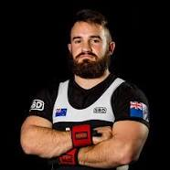
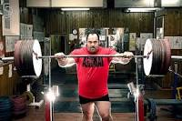
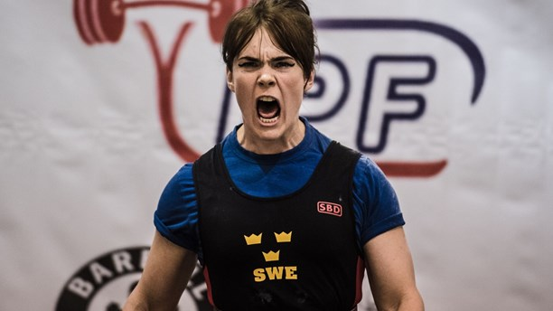
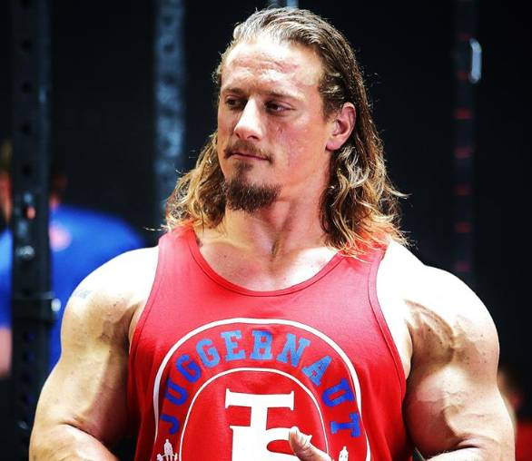

BRETT GIBBS
- Ålder: 26 år
- Längd: 1.64 m
- Tävlingsvikt: 77kg
- Bänkpress personligt rekord: 186 kg
- Marklyft personligt rekord: 305.5 kg
- Knäböj personligt rekord: 280 kg
ANDREY MALANICHEV
- Ålder: 40 år
- Längd: 1.82 m
- Tävlingsvikt: 155 kg
- Bänkpress personligt rekord: 260 kg
- Marklyft personligt rekord: 405 kg
- Knäböj personligt rekord: 485 kg
ISABELLA VON WEISSENBERG
- Ålder: 27 år
- Längd: 1.65 m
- Tävlingsvikt: 72 kg
- Bänkpress personligt rekord: 97.5 kg
- Marklyft personligt rekord: 200 kg
- Knäböj personligt rekord: 188 kg
DAN GREEN
- Ålder: 34 år
- Längd: 1.78 m
- Tävlingsvikt: 110 kg
- Bänkpress personligt rekord: 237.5 kg
- Marklyft personligt rekord: 380 kg
- Knäböj personligt rekord: 385 kg